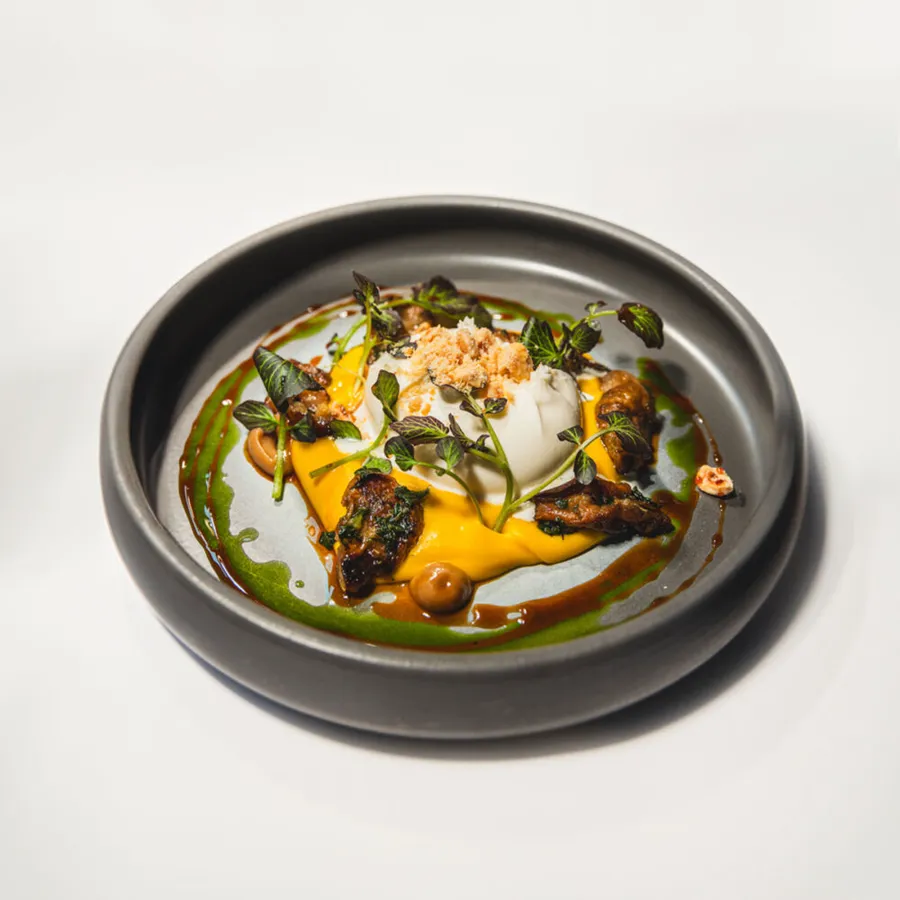
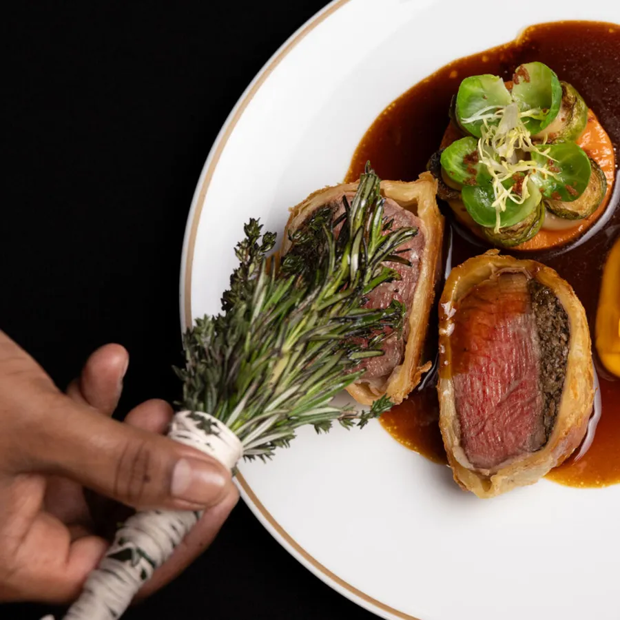

Modern English dining · The Mount Stephen, est. 1880
A Victorian mansion, at your table.
Breakfast at 7, dinner in the salon, cocktails until 2. Downtown Montreal's grandest room.
From the kitchen
Old-world room. Sharp new menu.


★ 4.5 · 4,598 Google reviews
“The building itself is absolutely stunning — elegant, historic, and captivating.” — Daichi I.
“Elegant, classy, perfect for a special occasion. The atmosphere really gives a luxury vibe.” — Rebeka T.
“Very fancy English club looking restaurant. Service is excellent.” — Stéphane
Breakfast at 7.
Cocktails till 2.
Monday to Friday from 7 AM, weekends from 8. Thursday through Saturday, the bar pours past midnight.
Reserve a tableor call (514) 669-9243